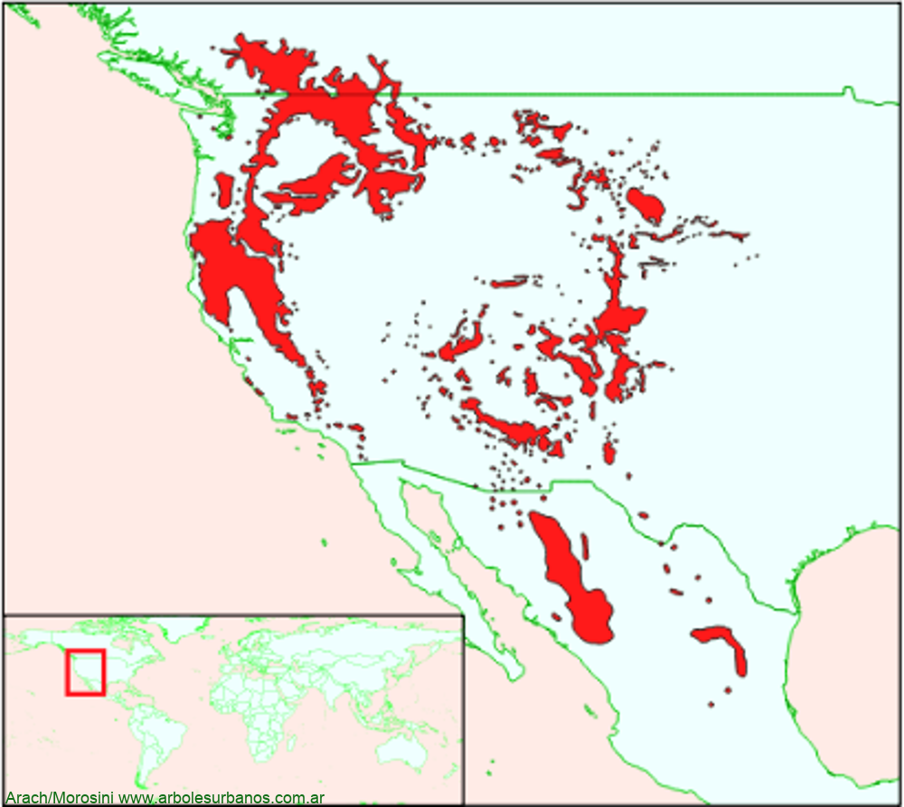

Click en las imágenes para ampliar

{kind=link}
{kind=link}
{kind=link}
{kind=link}
{kind=link}
- NOMBRE CIENTÍFICO
- Pinus ponderosa
- FAMILIA BOTÁNICA
- Pináceas
- ORIGEN
- Es una especie que tiene unas amplia distribución natural, básicamente ocupa el oeste del continente Norte Americano, desde Canadá, hasta México.
- DESCRIPCIÓN GENERAL
- Es un árbol de gran porte, en su área de dispersión natural crece normalmente entre 20 y 40 metros y más de un metro de diámetro a la altura del pecho, aunque se citan ejemplares de más de 65 metros y 2.5 metros de diámetro. Vive entre 300 y 600 años como máximo. Posee una copa de forma piramidal o cónica cuando joven, luego es más extendida, dependiendo de la situación donde crezca, si es un ejemplar aislado, o cerca de otros árboles. Su corteza joven es de color naranja y escamosa, la corteza adurlta el pardo oscura con fisuras longitudinales. Sus hojas son acículas agrupadas de a tres, tiene entre 10 y 15 cm. de largo, son de color verde oscuro.
- ESTRÓBILOS
- Los masculinos están ubicados en los extremos de las ramas son de color amarillos rojizo, los femeninos se encuentran agrupados formando verticilos de color violáceos, cuando están maduros son de color marrón claro de hasta 15 cm. de largo
- USOS
- De uso estrictamente forestal, posee una albura blanco amarillenta y duramen marrón rojizo. En su lugar de origen su madera tiene múltiples usos desde madera estructural, aberturas, molduras, carpintería interior y embalajes. Localmente en los lugares donde realizan plantaciones son para producir madera de rápido crecimiento. Esta especie es la más cultivada con fines forestales en la patagonia donde principalmente se la utiliza en construcción y en revestimientos principalmente
- REPRODUCCIÓN
- Por medio de semillas
- PARTICULARIDADES
- En su lugar de origen se reconocen 6 subespecies con bastantes diferencias en el porte, donde la mayor es la que crece cerca de la costa del pacífico (California y Oregon)